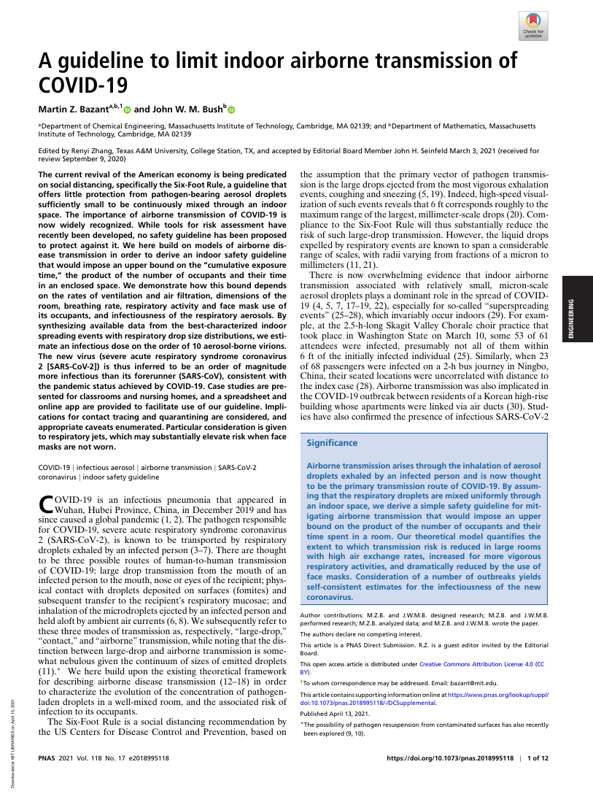

25:11 · 1 OPERA
La "logica" di un'epoca che ha perduto il senno.
Il filo del discorso
L’immagine dell’Urlo di Munch apre una riflessione sulla perdita di autonomia dell’individuo moderno. Dr Divago collega strumenti tecnici, organizzazione sociale e bisogno di affidarsi all’autorità, utilizzando come esempio polemico una mostra su Hannah Arendt. Una sequenza di domande sulle misure sanitarie introduce la discussione della loro coerenza, seguita dal richiamo a un magistrato tedesco critico delle restrizioni. L’ultima parte commenta uno studio MIT sulla trasmissione aerea e presenta alcune percentuali di sopravvivenza. La conclusione torna alla relazione fra obbedienza, informazione e interessi economici. La scheda distingue questa interpretazione filosofico-politica dalle conclusioni della ricerca scientifica citata.
I libri nel discorso

A guideline to limit indoor airborne transmission of COVID-19
Identificazione probabile
Prima pagina dell’articolo scientifico: PNAS · 118(17), e2018995118 · 2021
Prima pagina autentica dell’articolo scientifico, riprodotta dal PDF ospitato dal MIT. Titolo, autori e dati PNAS leggibili; non è una copertina di un libro.
La lettura di passi sulla regola dei sei piedi e sul trasporto delle gocce corrisponde probabilmente all’articolo MIT di Bazant e Bush; autori e titolo non annunciati.
Passaggio 16:50 ↗ · Fonti e libro ↗